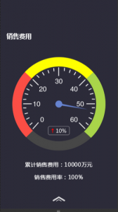

①一般我们写css3 animation动画的时候都是把它们定死在某个值不能改变，其实在js中是有相应的对象可以达到动态控制keyframes关键帧的目的
举个例子：
表盘效果
在消渴丸中定义的表盘效果，客户需要指针每个月根据数值做出动态变化
<div class="page page7">
<h4 class="element p7-1">销售费用</h4>
<p class="hidden-text p7-deg">100</p><!--指针角度 -133~133 -->
<div class="clock">
<div>
<img src="images/clock1.png" class="p7-2">
<img src="images/clock-p.png" class="p7-3 animated">
<p class="element p7-4 animated">累计销售费用：10000万元</p>
<p class="element p7-5 animated">销售费用率：100%</p>
</div>
</div>
</div>
.p7-deg这个隐藏标签就是用于接收后台设定的最终旋转角度
function clockfunction(page,rule){
var rotateDeg=parseInt($('.p'+page+'-deg').text());
var end="100% {-webkit-transform:rotate("+rotateDeg+"deg);opacity:1;}";
var key=document.styleSheets[3].cssRules[rule];
key.deleteRule("100%");
key.insertRule(end);
}
...
clockfunction(7,0);
document.styleSheets[3].cssRules[0] 表示获取html中第4个样式表中的第一条规则
值得注意的是webkit浏览器是不能使用这条语句来获取外链样式表的css规则（亲测出来的）
如果要想用js控制keyframes的关键帧，就需要将-webkit-keyframes放到<style>标签中来获取：
 style
style而在这个表盘效果的例子中，是通过clock1这个keyframes来控制的（微信专题中只需处理webkit前缀，想要兼容性更全面自行添加其他前缀）
而document.styleSheets[3].cssRules[0]就是获取clock1这个对象了
它是一个WebkitCSSKeyFramesRule对象，有三个接口，deleteRule, insertRule, findRule
WebkitCSSKeyFramesRule.deleteRule("50%");
WebkitCSSKeyFramesRule.findRule("50%");
WebkitCSSKeyFramesRule.insertRule("50%", "{left: 0px}");
我的处理方式就是通过获取.p7-deg中的值来动态设置指针最终旋转角度
另外，与animation相关的还有animationEnd,animationStart和animationIteration这三个事件，分别是在元素的动画结束时，开始时，或者完成一次迭代时触发，通过监听这些事件，可以做出更多动画变化，有待后续的发现咯